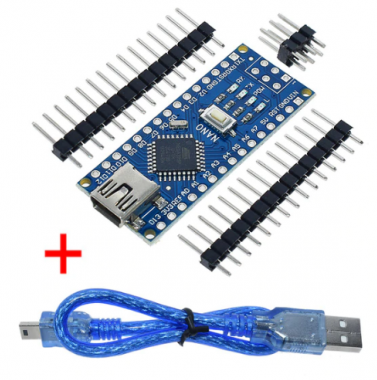
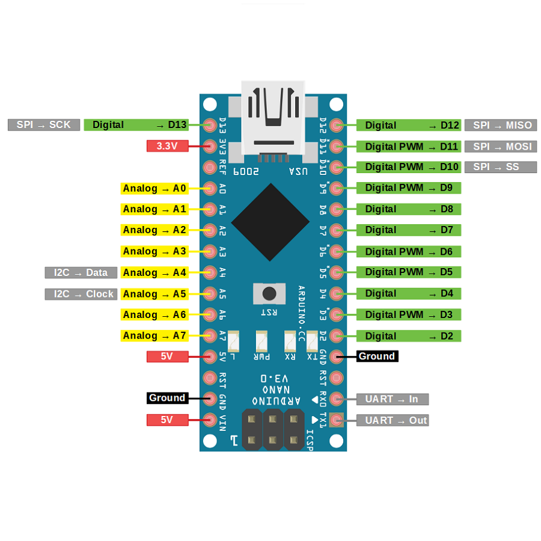
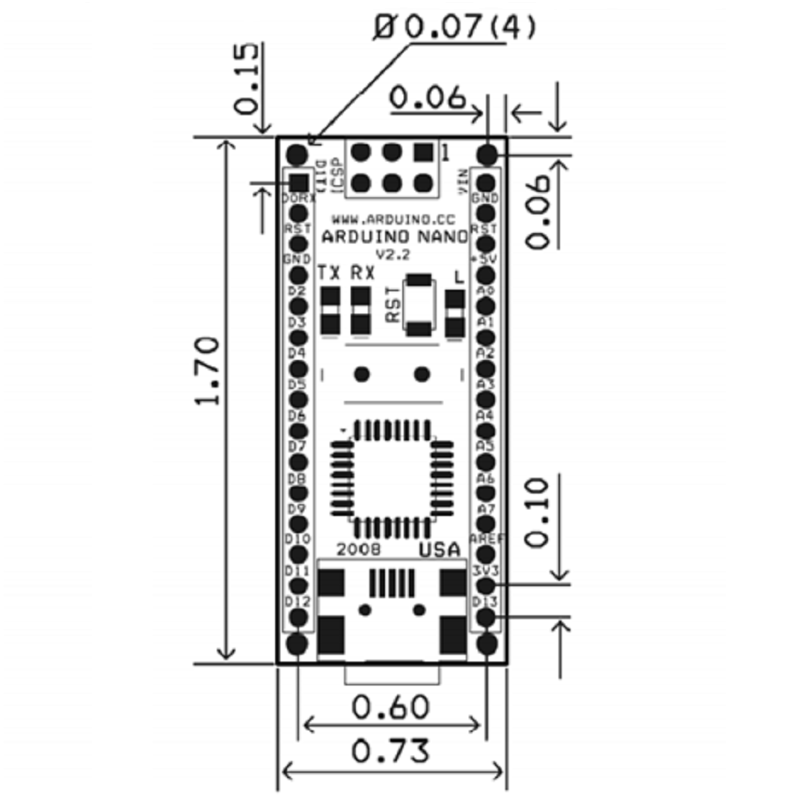
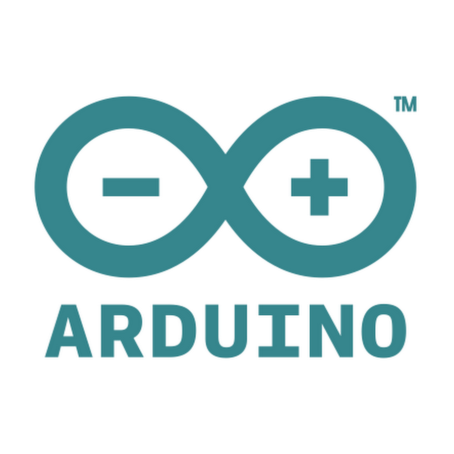
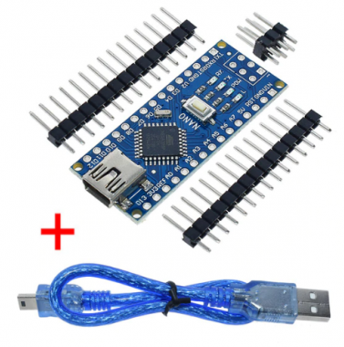
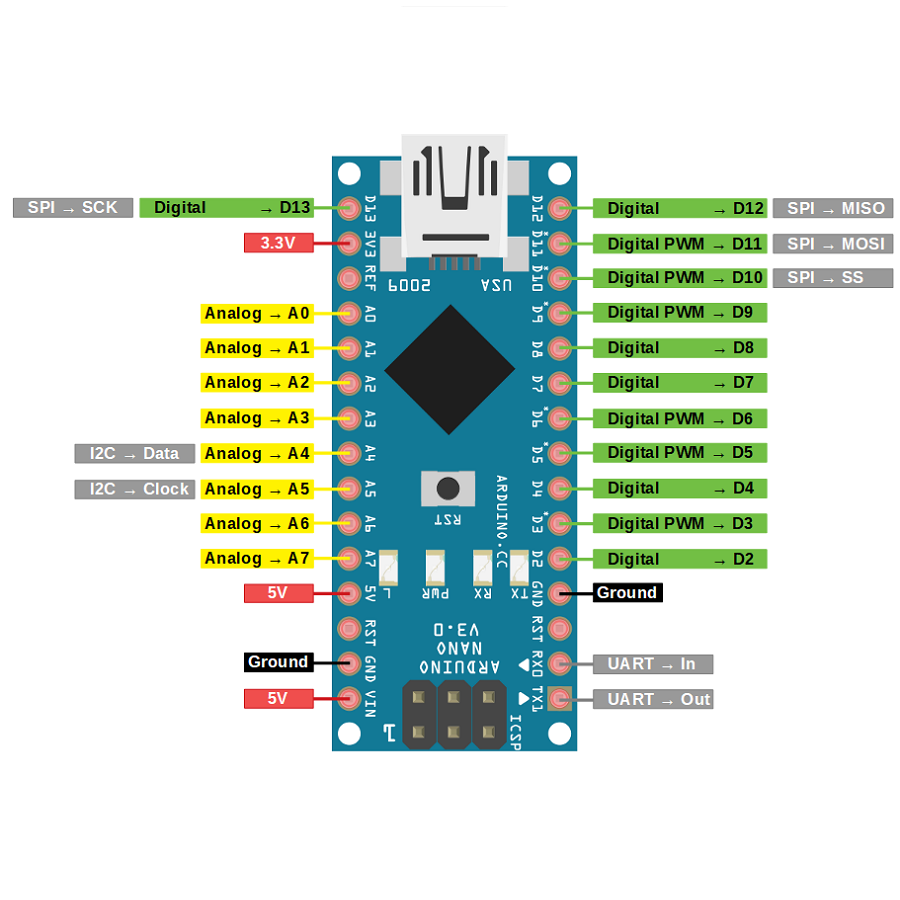
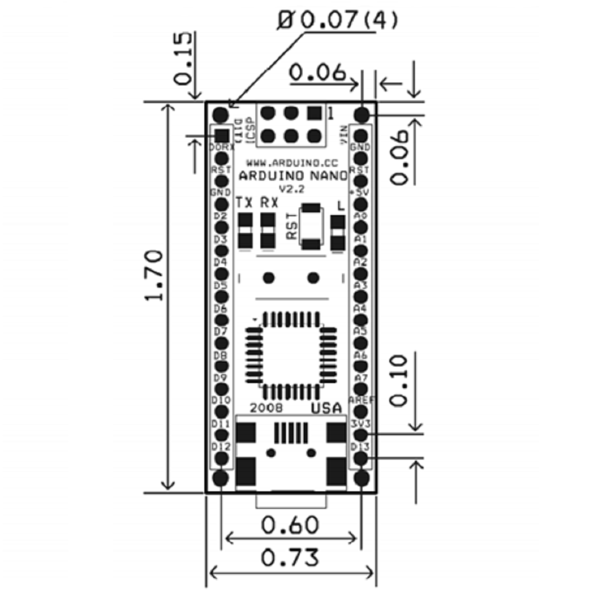
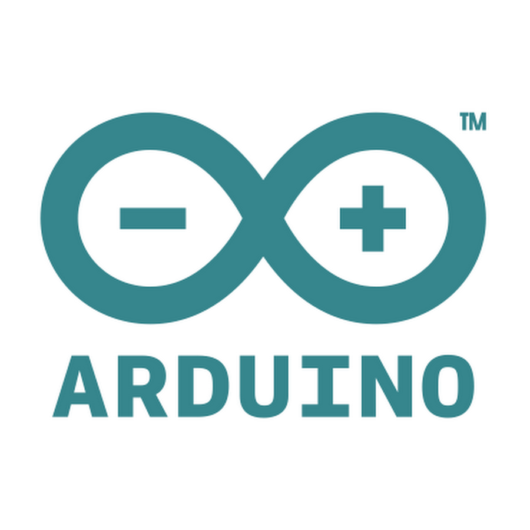
Tienda GPIO Online
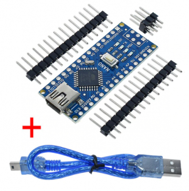
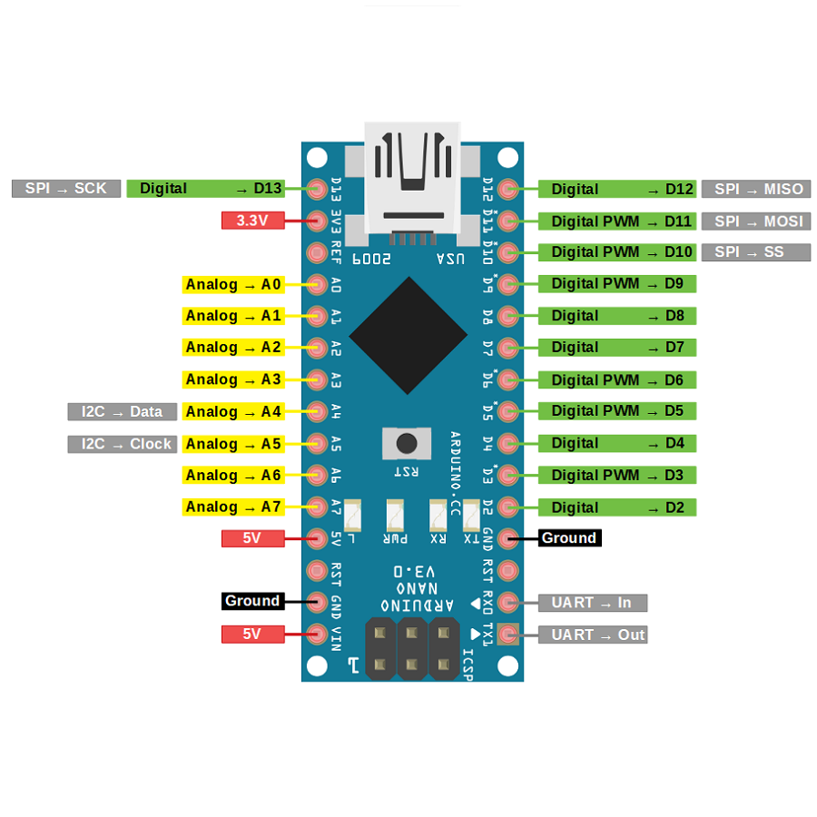
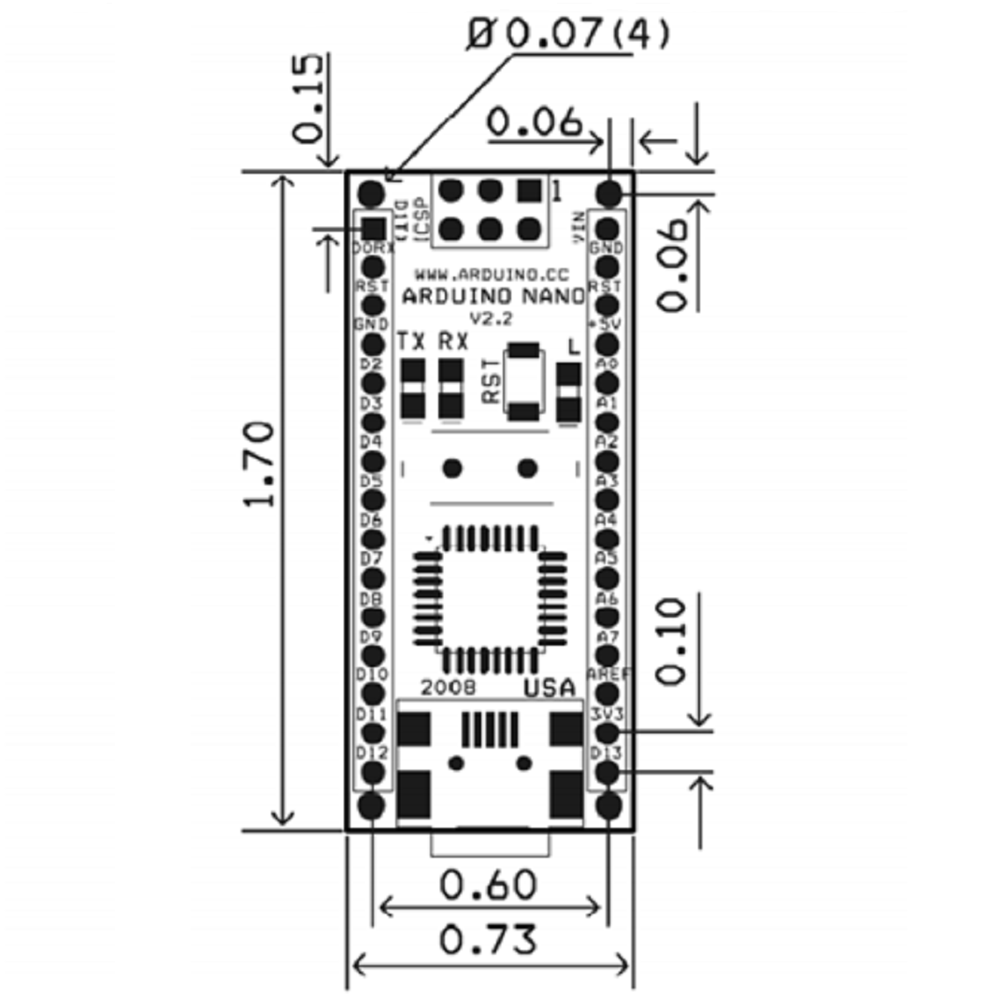
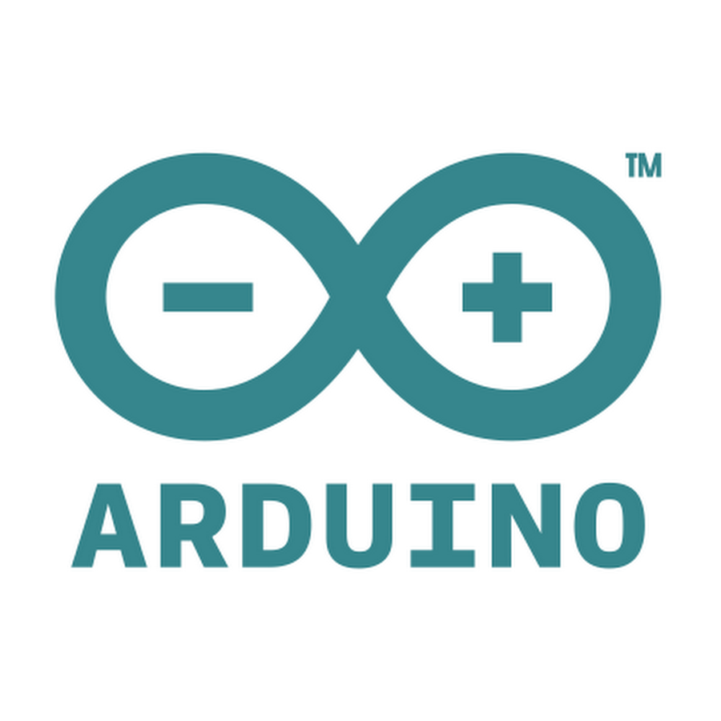
Especificaciones Del Arduino
| Microcontrolador | Atmel ATmega328 |
|---|---|
| Tensión de Operación (nivel lógico) | 5 V |
| Tensión de Alimentación (pin Vin) | 7-12 V |
| Pines E/S Digitales | 14 (de los cuales 6 proveen de salida PWM) |
| Entradas Analógicas | 8 |
| Corriente máx por cada PIN de E/S | 40 mA |
| Memoria Flash | 32 KB de los cuales 2KB son usados por el bootloader |
| SRAM | 2 KB |
| EEPROM | 1 KB |
| Frecuencia de reloj | 16 MHz |
| Dimensiones | 18.5mm x 43.2mm |
Descripción General
El Arduino Nano es una pequeña y completa placa basada en el ATmega328 que se usa conectándola a una protoboard. Tiene la misma funcionalidad que el Arduino Uno, pero con una presentación diferente. No posee conector para alimentación externa, y funciona con un cable USB Mini-B en vez de el cable estandar.El nano es una plataforma de E / S simple ultra-pequeña basada en código de fuente abierta, tiene una gran ventaja en tamaño en comparación con la versión anterior de USB. Funduino podría ofrecer servicios que necesiten operar de manera independiente y con dispositivos electrónicos interactivos, y también puede conectar a aquellos que estén conectados con la PC, en colaboración con flash, procesamiento, max / msp, PD, vvvv y otros programas.
Un microcontrolador es un circuito integrado programable, capaz de ejecutar las órdenes grabadas en su memoria. Está compuesto de varios bloques funcionales, los cuales cumplen una tarea específica. Arduino es una plataforma de hardware libre, basada en una placa con un microcontrolador y un entorno de desarrollo, diseñada para facilitar el uso de la electrónica en proyectos multidisciplinares. Arduino puede tomar información del entorno a través de sus entradas y controlar luces, motores y otros actuadores. El microcontrolador en la placa Arduino se programa mediante el lenguaje de programación Arduino (basado en Wiring) y el entorno de desarrollo Arduino (basado en Processing). Los proyectos hechos con Arduino pueden ejecutarse sin necesidad de conectar a un computador.
Podes descargar la hoja de datos del siguiente enlace: datasheet